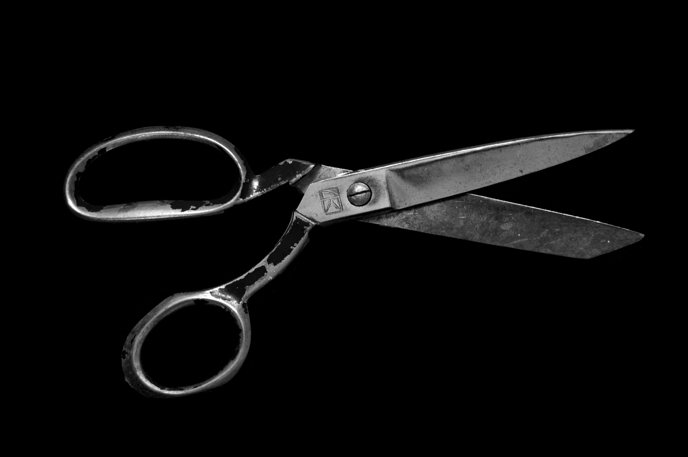

생명공학
유전자 가위
줄기세포
면역 항암 세포치료제
유전자 가위
1세대 유전자 가위는
징거핑크
뉴클레이즈
입니다.

1985년, 과학자들이 아프리카의 발톱개구리를 연구하다가 특이한 점을 발견했습니다. 아연이 중심인 물질이 DNA에 단단히 고정되어 있었던 것입니다. 있는 부분을 잘라내는 데에 사용하는 'Foki'을 떠올렸습니다. 이것이 바로 ZFNs, 즉 '
징크핑거 뉴클레이즈
'입니다.
라이브리 댓글 작성을 위해 JavaScript를 활성화 해주세요